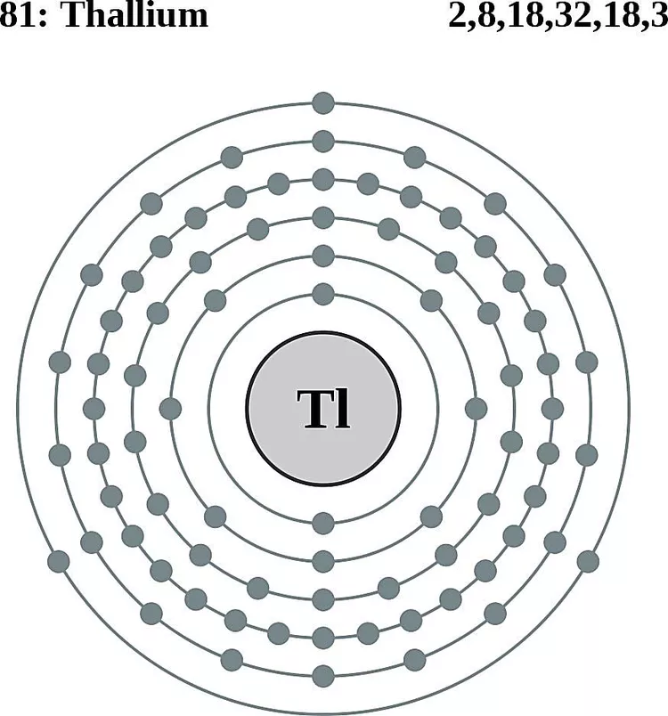

Atomic Number 81 | Highly Toxic Post-Transition Metal

Overview
Thallium is a chemical element with the symbol Tl and atomic number 81.
It is a soft, malleable, grayish post-transition metal that tarnishes easily upon exposure to air.
Thallium is highly toxic and was historically used in rat poisons and insecticides.
Discovered in 1861 by Sir William Crookes, thallium's name derives from the Greek word "thallos," meaning green shoot,
due to its bright green spectral lines. Despite its toxicity, thallium has specialized industrial and scientific applications.
Properties & Uses
Atomic Number: 81
Atomic Mass: 204.38 u
Electron Configuration: [Xe] 4f14 5d10 6s2 6p1
Group / Block: 13 (p-block)
Standard State: Solid at 25 °C
Melting Point: 304 °C
Boiling Point: 1473 °C
Radioactive: No
Thallium is used in specialized applications such as infrared optics, low-temperature thermometers, and semiconductors.
It is also employed in the production of certain types of glass to improve their refractive index.
Due to its toxicity, the use of thallium is heavily regulated, and safer alternatives are often sought.
Thallium in Action
Thallium's unique properties make it a valuable element in specialized applications,
despite its toxicity and potential risks.
Its distinctive green spectral lines have been instrumental in scientific research and analysis.
Historical Perspective
Thallium was discovered in 1861 by Sir William Crookes while analyzing residues from sulfuric acid production.
Its bright green spectral lines were instrumental in identifying it as a new element.
Though historically used in pest control, its toxicity has led to its replacement with safer substances.
Today, thallium is primarily used in research and specialized industrial processes,
underscoring its importance despite its risks.